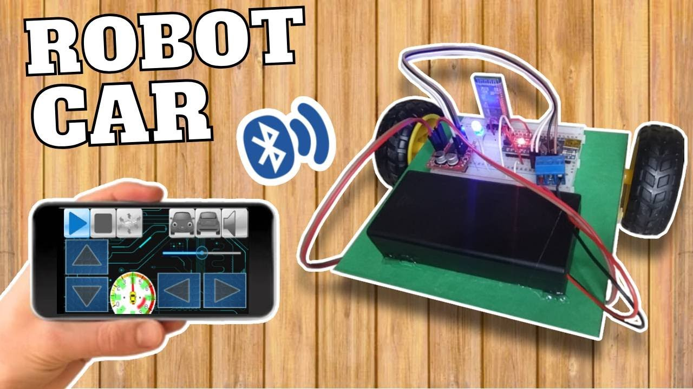

Reto: Construcción de un Carro Robótico con Bluetooth
Introducción
En el último día del curso, se propone un reto práctico para aplicar y consolidar los conocimientos adquiridos. El objetivo es construir y programar un carro robótico controlado por Bluetooth, utilizando un microcontrolador Arduino y un módulo Bluetooth (HC-05 o HC-06). Este proyecto integrará áreas como electrónica, programación y diseño mecánico.
Además de reforzar habilidades técnicas, este reto fomenta la resolución de problemas, el pensamiento computacional y la creatividad. También ofrece a los docentes una guía para replicar esta actividad en el aula, promoviendo un aprendizaje significativo basado en la práctica.
